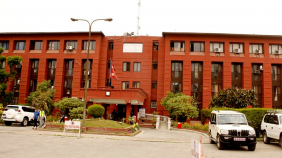

चीनबाट भएको सीमा अतिक्रमणलाई ढाकछोप गर्न खोज्नु राष्ट्रघात : कांग्रेस

२४ घण्टामा २ हजार ६३८ कोरोना संक्रमित थपिए, २ हजार १७४ जना कोरोनामुक्त
उपत्यकामा २४ घण्टामा थपिए १ हजार ४०३ कोरोना संक्रमित
पछिल्लो २४ घण्टामा काठमाडौं उपत्यकामा नयाँ १ हजार ४०३
कोरोना संक्रमित देखिएका छन् ।
देशमा कोरोना लहर, नेतालाई कार्यकर्ता प्रवेश गराउनै रहर !
जनता समाजवादी पार्टीका नेता भ्रष्टाचारको आरोप झुटो र दुराशयपूर्ण एवं पूर्वप्रधानमन्त्री बाबुराम भट्टराईले पर्साको सुखौनी र ठोरी गाउँपालिकामा पार्टीले गरेको कार्यक्रमका चार फोटो सोमबार दिउँसो ट्वीटरमा पोस्ट गरे । कांग्रेस र नेकपालगायतका पार्टी परित्याग गरी १५ सयभन्दा बढी नेता कार्यकर्ता आफ्नो पार्टीमा प्रवेश गर्नुलाई उनले पार्टीप्रति आकर्षणको व्यापक लहरका रूपमा पनि अर्थ्याए ।